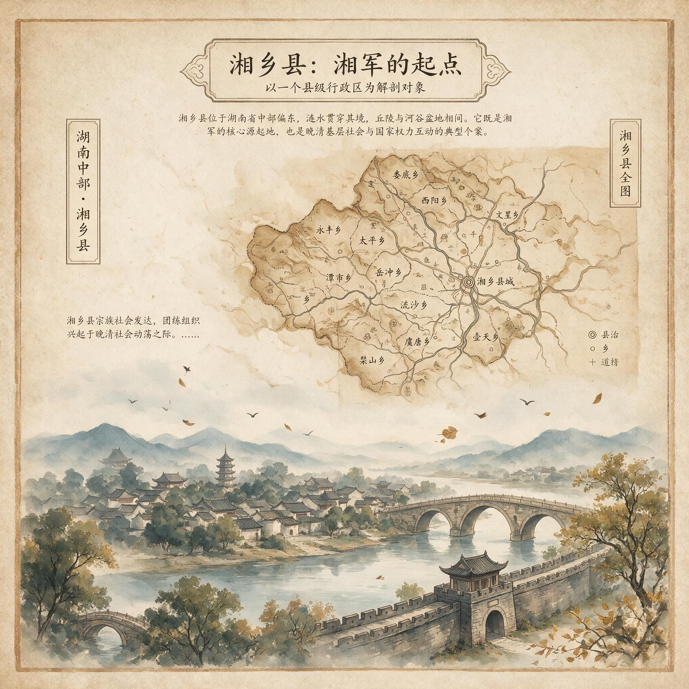

第 2 章
以湘乡县为主要解剖对象
咸丰二年十二月，湘乡县城南门外的团练总局内，一份墨迹未干的募兵名册摊在案上。名册以本地土产的毛边纸装订，封面用蝇头小楷题写“湘乡县各都甲团练丁册”，存放于总局西侧厢房的樟木柜中。名

册共录入了三百七十四人，分属十一都二十三甲，每名练丁名下注明了户主姓名、田亩数、丁口数，以及“自愿”或“劝募”的标记。
这份名册的书写者没有意识到，他正在完成一份日后会被反复翻检的档案——不是因为它的军事价值，而是因为它无意间记录了一次社会筛选的精确剖面。
名册上最引人注目的不是那些名字本身，而是名字背后标注的田产数字。三百七十四人中，田产在十亩以下者二百一十六人，十亩至三十亩者一百一十二人，三十亩以上者仅四十六人。湘乡县当时的户均田产约为十五亩，这意味着首批应募者的田产中位数明显低于县域平均水平。但他们又不是一无所有的赤贫者——名册上只有九人标注为“无产”，且均被注明“由族产担保入营”。
这批人的主体，是那些拥有少量土地但正处在下行通道中的自耕农与半自耕农。要理解这个阶层为何成为湘军最早的兵源基础，必须回到湘乡县在道光末年至咸丰初年面临的具体压力。
根据道光二十九年编修的《湘乡县志》记载，全县在册田亩约八十三万亩，人口已逾五十三万，人均耕地不足一点六亩。在湘乡这样的丘陵县，这个数字意味着大量家庭处于生存边缘——一亩水田的正常年产量约为三石稻谷，扣除地租或赋税后，剩余部分仅够维持一个五口之家的基本口粮。
一旦遭遇歉收或额外开支，这些家庭就必须举债。而湘乡民间的借贷利率通常在年息三分以上，以土地抵押借款的结果往往是田产被债主收走。
更关键的是，太平军入湘前数年，湘乡连续遭遇水旱灾害。道光二十八年的大水导致涟水沿岸数万亩稻田绝收，次年又逢旱灾，米价腾贵至每石三千文以上。对于田产在十亩以下的小农户而言，连续两季歉收意味着积累多年的家底在数月内耗尽。
这份募兵名册上标注“自愿”的二百四十一人中，有一百六十七人来自上述受灾最重的沿河都甲。他们不是被“忠义”感召而从军，而是被债务和土地压力推入了军营。
湘军的募兵章程规定，每名正勇月饷银四两五钱——这个数字是当时湘乡短工日薪的六到八倍。
对于一个面临失地风险的小农户而言，一个劳动力外出当兵，意味着家庭减少一张吃饭的嘴，同时每年可以寄回数十两白银。这笔钱足以偿还债务、赎回抵押的田产，甚至可以在灾年买粮度荒。这不是抽象的国家动员，而是一道精确的家庭经济计算题：留下种地，可能两年内失去土地；外出当兵，则有可能在一年内还清债务并保住田产。对于站在失地边缘的自耕农而言，这个选择的方向几乎是确定的。
但这只是故事的一半。名册上还有另一种标记：在“劝募”一栏下被注明的人名，往往来自田产稍多、但家庭劳动力冗余的农户。
湘乡曾氏族谱中保存的一份分家文书提供了更细致的线索。曾毓济房下四子，长房分得水田十二亩、旱地三亩，二房分得水田十亩、旱地二亩，三房与四房各得水田八亩。这份道光二十六年立下的分家文书规定，各房“各自营生，不得侵越”。到了咸丰三年湘军募兵时，三房与四房各出了一人从军，长房与二房则无人应募。
这不是偶然。在湘乡的宗族结构中，分家后的财产继承顺序决定了各房支的风险承受能力。
长房通常占有优势地位，继承较多田产，承担祭祀祖先和赡养父母的义务，也因此享有更高的族内话语权。末房则处于相对边缘的位置，田产较少，在族产分配和决策中话语权有限。当兵役风险出现时——阵亡、伤残、长期离乡导致家庭劳动力不足——最没有退路的房支最先进入暴力市场。
同样的逻辑在不同宗族中反复出现。湘乡刘氏族谱记载，咸丰三年至六年间，刘氏五房共有十一人投入湘军，其中九人来自各房的末支，两人为族中过继子。这十一人中，有七人的家庭田产不足十亩，三人田产在十至十五亩之间，只有一人田产超过二十亩。
更这十一人中后来有四人阵亡，三人伤残归乡，只有四人完整返乡并获得了战利品分配。风险的分布与收益的分布从一开始就沿着宗族内部的阶层线分化。这不是事后才显现的格局——它在募兵名册上的“自愿”与“劝募”标记中就已经被预写了。
这种宗族内部的筛选机制之所以能够运作，与湘军的招募制度密切相关。湘军的基本编制单位为营，每营五百人。
营官由统领选拔任命，而营官拥有自行招募哨官和勇丁的权力。这意味着招募过程不是在抽象的“社会”中进行的，而是在具体的宗族、乡里和熟人网络中展开的。营官回到本乡本族招募勇丁时，他面对的不是一群无差别的“农民”，而是有着明确房支归属、田产多寡和家庭劳动力状况的具体的人。他知道谁家的田已经押给了债主，知道谁家的次子闲在家里吃闲饭，知道谁家的末房在族里说不上话。这种地方性知识使得募兵过程天然地具备了筛选功能——它把最需要现银的人和最可以被牺牲的人优先挑了出来。
落第书生与低级士绅的入营轨迹则呈现出另一条筛选逻辑。湘乡县学额有限，每科录取的秀才名额不过二十余人，而应试生员通常超过千人。科举通道本就狭窄，太平军阻断长江漕运与南方乡试后，这条通道被进一步压缩。咸丰二年至五年间，湖南乡试因战事中断两次，大量生员失去了晋升机会。
对于这些已经投入多年时间与金钱换取功名资格的读书人而言，科举壅滞不仅是仕途的中断，也是经济上的灾难——生员身份意味着免赋税、领廪膳，一旦这些特权无法兑现为实际收益，他们面临的是社会地位与经济收入的双重坠落。
湘乡县学的一份廪生名册显示，咸丰三年在册的三十八名廪生中，有七人在此后两年内投入了湘军系统。他们并非以将领身份进入——那需要更高的功名或更强的族内背景——而是作为营中文案、哨官或低级幕僚。这些位置月薪通常在五两至十两之间，高于正勇但远低于营官。对于这些廪生而言，从军不是“投笔从戎”的英雄叙事，而是在科举通道冻结后维持社会地位与经济收入的替代路径。他们带进军营的不是军事才能，而是读写算能力——这些能力在传统科举体系下只能服务于八股文写作，但在湘军的后勤、文书、情报系统中却成为稀缺资源。
湘乡曾氏的另一份文献揭示了这种路径转换的具体机制。曾国藩的堂弟曾国潢，道光二十八年考取秀才后两次乡试不第，咸丰三年时年已三十一岁。
他在给族兄的信中写道：“家中食指日繁，弟坐食非计。”这封信的语气是实用主义的——不是慷慨从戎，而是计算了坐守乡间的经济成本后作出的选择。曾国潢最终没有直接上阵作战，而是进入湘军营务处管理粮台，月支薪水八两。这个数字虽然不及通过科举入仕的预期收益，但在科举通道已经冻结的现实下，它提供了一个止损方案。
曾国潢的案例并非孤例。湘乡县在咸丰三年至六年间投入湘军的生员与监生共计四十三人，其中二十七人担任文案、书办、哨官等低级职务，十一人担任营务处幕僚，五人后来升至营官以上。这四十三人中，有三十一人的家庭田产在二十亩至五十亩之间——这个阶层在正常年景下可以维持体面生活，但经不起社会地位的长期冻结。他们的入营动机与中下农户不同：不是为了生存，而是为了维持阶层位置。一个拥有三四十亩田产的生员家庭，在正常年景下可以通过地租收入和廪膳银维持读书人的体面生活。
但当科举通道冻结、廪膳银停发、战乱导致地租收入下降时，这个家庭不会立刻陷入贫困，但会面临缓慢的地位侵蚀——无法继续供子弟读书、无法维持社交开支、无法为下一科考试储备盘缠。从军提供了一条阻断这种侵蚀的途径：月薪八两的文案职务虽然不如知县体面，但足以维持家庭的日常开支，并保留未来通过军功转入仕途的可能性。
两类人群的入营路径虽然不同，但都指向同一个结构特征：湘军的募兵过程是一次地方社会内部的风险分配。最没有退路的房支与个人率先进入暴力市场，而拥有更多土地、更高功名、更强族内地位的群体则有能力观望、延迟甚至规避兵役风险。
这不是湘乡特有的现象。湘潭、浏阳、平江等县的募兵名册显示出相似的阶层分布。湘潭县咸丰四年的募兵名册录入了五百一十二人，其中田产在十亩以下者占百分之六十一，十亩至三十亩者占百分之二十八，三十亩以上者仅占百分之十一。浏阳县同年的数据显示，应募者中自耕农与半自耕农占比超过七成，赤贫无产者不足百分之五。
这一比例结构的军事意义被后来的湘军战史反复强调——“朴实农民”被认为比城市游民更可靠、更能吃苦、更服从指挥。但这种叙事遮蔽了一个更关键的机制：这些“朴实农民”之所以可靠，不是因为道德品质，而是因为他们有明确的物质动机。一个拥有少量田产但面临失地风险的自耕农，比一个一无所有的流民更渴望战利品，也更依赖战利品回流来维持和恢复原有的社会位置。流民打完仗可以一走了之，小农户打完仗必须回到本乡本土，用战利品赎回田产、偿还债务、重建家业。
这意味着湘军的战斗力从一开始就建立在一个悖论之上：士兵的作战动力来自他们对原有社会位置的眷恋，而这种眷恋之所以强烈，恰恰是因为他们正处于失去这个位置的边缘。他们不是在保卫一个稳定的家园，而是在试图夺回一个正在滑落的阶层身份。这种动力比“忠义”更持久，也比“保家卫国”更具体——它直接锚定在每一亩田、每一笔债、每一张地契上。
当湘军在咸丰四年攻克武昌时，普通勇丁最关心的不是战报上的捷报措辞，而是战利品中有多少现银可以寄回家中。这种关心不是贪婪，而是经济理性的精确表达：他们进入军营时带着具体的债务数字和田产抵押期限，他们需要在这些期限到来之前拿到足够的银子。
落第书生的动力结构与此类似但有所不同。他们不是在夺回失去的东西，而是在寻找替代性的上升通道。科举体系为他们提供了一套完整的地位评估标准——功名等级、官职品级、俸禄数额——当这条通道被战乱阻断后，湘军系统提供了另一套可以量化的替代标准：月薪数额、职务等级、战功赏格。湘军的营制规定，哨官月薪九两，营官月薪五十两，统领另有公费银。
这些数字对于熟悉科举俸禄体系的生员而言，是可以直接换算和比较的。一个廪生每年的廪膳银约为四两，一个知县每年的养廉银在数百两至上千两之间。湘军低级幕僚的年收入在六十两至一百二十两之间，相当于一个中等知县的养廉银水平。这不是“投笔从戎”，而是将原有的地位竞争转移到了一个新的平台上。
但这条替代通道有其内在局限。科举体系是一个相对开放的竞争系统——至少在理论上，任何拥有生员资格的人都可以通过层层考试向上流动。湘军系统则是一个高度人格化的庇护网络。进入湘军的生员能否获得晋升，不仅取决于能力，更取决于他们与营官、统领之间的私人关系。曾国藩的幕府吸纳了大量湖南士人，但能够从中脱颖而出进入高级将领序列的，往往是那些与曾氏有地缘、血缘或学缘关系的人。湘乡曾氏、刘氏、罗氏等大宗族的子弟在湘军系统中的晋升速度明显快于外姓或外县人。
这种差异在募兵阶段就已经显现。湘乡曾氏族谱记载，咸丰三年至六年间，曾氏各房共有二十三人投入湘军，其中十五人担任哨官以上职务，八人后来升至营官以上。同县的朱氏、陈氏等较小宗族虽然也有子弟入营，但绝大多数停留在正勇或低级什长位置。这不是能力差异造成的，而是招募机制本身的结构性倾斜——营官回到本乡招募时，天然倾向于招募自己的亲属、同乡和熟人。
这种招募方式在军事上有利于凝聚力和指挥效率，但在社会后果上，它把战利品分配和晋升机会预先锁定在了特定的宗族网络内部。一份保存于湘乡县档案馆的“湘军各营湘乡籍官兵名册”残卷提供了更精确的数据。这份名册记录了咸丰四年至七年间湘乡县投入湘军的二千七百余人中，属于曾、刘、罗、李四大姓的占百分之四十三，而这四大姓在湘乡县总人口中的占比不超过百分之二十。更关键的是，在哨官以上职务中，四大姓子弟占比达到百分之六十七。宗族网络不仅决定了谁去当兵，也决定了谁能在军营中获得晋升机会。
这种筛选机制为后续的战利品回流埋下了结构性伏笔。当湘军攻克武昌、九江、安庆等城市后，大量战利品——包括现银、物资和土地——通过各级军官流向他们的原籍地。但这些战利品的分配并非按照军功大小均匀分布，而是沿着募兵阶段就已经形成的宗族与阶层线路集中流动。那些最早进入军营的末房子弟和濒临破产的小农户，虽然承担了最大的阵亡和伤残风险，但在战利品分配中往往处于末端位置。
而那些来自大宗族长房、拥有更高功名和更强族内背景的人，即使在军营中担任的是风险较低的后勤或幕僚职务，也能通过庇护网络获得更大份额的战利品。
这不是一个道德判断，而是一个结构性的后果。募兵阶段的筛选逻辑——最没有退路的人最先进入暴力市场——决定了首批应募者是最渴望战利品的群体，但同时也决定了他们在战利品分配体系中处于最弱势的谈判位置。他们进入军营是为了保住或恢复原有的社会位置，但军营内部的权力结构使得他们获得超额回报的可能性极低。他们能够得到的，是月饷和基本的战功赏银——这些收入足以偿还债务、赎回田产，但不足以实现阶层跃升。
真正通过湘军实现阶层跃升的，是那些在募兵阶段就拥有更多选择权的人——他们可以观望到战局明朗后再决定是否入营，可以凭借功名或族内关系直接进入幕僚或军官序列，可以在战利品分配中利用庇护网络获取更大份额。这些人不是被经济压力推入军营的，而是被上升机会拉入军营的。
他们的入营时间通常晚于首批应募者，但他们的收益却远高于首批应募者。湘乡罗氏的案例清晰地展示了这种分化。罗泽南在咸丰二年率先组建湘勇时，首批招募的练丁大多来自罗氏宗族中的贫寒房支和邻近村庄的小农户。这些人跟随罗泽南转战湖南、湖北，伤亡惨重。罗泽南本人在咸丰六年阵亡于武昌城下，他麾下的早期骨干也大多战死或伤残。
但罗氏宗族并未因此衰落——相反，罗泽南的族侄罗逢元、罗萱等人后来进入湘军系统并升至高级将领，罗氏宗族通过他们在战利品回流中获得了大量土地和商业资本，成为湘乡县最显赫的家族之一。早期阵亡者的家庭则只获得了有限的抚恤银和旌表荣誉，他们的后代并未分享到罗氏宗族后来积累的战争红利。
这种分化不是个案。湘乡县在咸丰至同治年间出现了明显的财富集中趋势。根据同治十三年编修的《湘乡县志》记载，全县拥有田产五百亩以上的大户从道光末年的三十七户增加到同治年间的八十九户，其中超过六成的新增大户有家族成员在湘军中担任营官以上职务。
全县自耕农比例从道光末年的约百分之四十五下降到同治年间的约百分之三十二。战争红利确实回流到了湘乡，但它不是均匀灌溉，而是沿着既有的社会分层线路集中注入。这种集中注入的机制，在募兵阶段就已经被锁定了。谁去当兵、谁留乡守业，谁进入军官序列、谁停留在士兵层级，谁能够通过庇护网络获取战利品、谁只能依靠固定饷银——这些差异不是在战争结束后才出现的，而是在第一批募兵名册上就已经被宗族内部的财产继承顺序、房支地位高低和科举功名等级所预先决定了。
有人或许会提出异议：湘军的成功恰恰证明了这种筛选机制的有效性——它选拔出了最有战斗力的兵源，打赢了战争，战利品回流本身就是一个增量，即使分配不均，也比没有回流要好。这个论点忽略了一个关键问题：分配不均不是战争结束后的次要后果，而是从一开始就内嵌在募兵机制中的结构性特征。募兵阶段的筛选不仅决定了谁上战场，也决定了谁能够在战后受益。
在湘乡的宗族议事中，兵役名额从未被当作纯粹的义举来讨论。曾毓济房在咸丰三年的那次商议，虽然没有留下会议记录，但从分家文书和后来的族谱记载中可以推断出大致轮廓：四房各自面对同一道题目——是否出丁入营——但四房手中的选项并不相同。长房承担着奉祀和赡养的责任，这个责任在族中拥有近乎免役的效力。二房的田产虽不及长房，但足以维持一个稳定家庭，也无需冒险。
三房与四房则没有这种缓冲。八亩水田在正常年景下已经是生存的下限，连续灾年之后，他们面临的不是“是否愿意当兵”，而是“还有哪种方式可以保住土地和家庭”。
族谱中留下的记载极为简洁：三房出一丁，四房出一丁。没有记载的是，这两个房支在族会上是否提出过异议，或者是否有别的房支被优先考虑后又被豁免。
但可以确定的是，当“劝募”开始运作时，劝的方向和强度从来不是均匀施加的。它集中落在那些最无法拒绝的人身上。
时任湘乡知县朱孙诒在摊派捐输时，常亲赴各乡大户宅邸，“面劝”其认捐，并将捐额与功名、田产挂钩，形成一套半公开的压力传导机制。
“劝募”这个词在名册上被当作与“自愿”并列的标记，但它掩盖了一个充满张力的过程。真正的自愿——一个家庭在完全权衡利弊后主动选择从军——与被迫的自愿——一个家庭在债务和族内压力下点头——在名册上被归入同一栏。这种归类的模糊性不是书写者的失误，而是募兵制度的一种特征。
营官回到本乡招募时，需要完成一个名额指标，但这个指标不是国家摊派的兵额，而是营官自己设定的编队规模。在湘乡这样的宗族社会中，完成这个指标的最便捷方式，是先从自己所属的宗族内部动员那些“合适”的人——合适不仅指身体条件，更指社会位置。末房、次子、负债者、分家后田产不足的房支，这些人在族中缺乏足够的议价能力来拒绝。他们的“自愿”是结构性压力的产物。
这种结构性压力在低级士绅身上以另一种方式起作用。曾国潢在给族兄曾国藩的信中使用了“坐食非计”四个字。这四个字包含的计算，与三房四房的算术题不同，但同样精确。
曾国潢不是没有土地，曾氏长房在湘乡拥有相当的田产规模。但他的困局在于，作为生员，他维持着一个读书人的社会身份，这个身份要求他不能长期从事农业生产——那会被视为“沦落”。他必须在读书人、闲居者和办事者之间选择一种状态。
科举通道断裂后，“读书人”已经无法继续兑现为功名；“闲居者”则是“坐食”的羞耻；“办事者”——即使在湘军营务处管理粮台——至少维持了“在外任事”的身份。
月薪八两对他来说不仅是收入，更是身份维持装置。这种身份需求与小农户的生存需求一样紧迫，只是表现形式不同。
紧迫性的差异带来了不同的时间期待。小农户从入伍第一天起就在计算归期：债务到期前要寄回多少银子，田产赎回期限在什么时候。他们的战利品需求是即时的、紧急的、不可拖延的。
低级士绅则不同。他们可以等待。他们进入军营时已经在心态上做好了长期经营的准备——通过军功转入仕途，通过幕府关系积累人脉，通过职务参与获得未来的分配优势。这种等待的耐心，使得他们在战利品回流中天然地占据了有利位置：当小农户急于将每一笔军饷寄回家中时，低级士绅可以将部分收益留在手中，等待战争结束后在家乡进行更大规模的投资。
湘乡县战争期间的地价波动为他们提供了这样的机会。当部分地主因战乱和赋税压力急于出售田产时，手中握有现银的人可以以远低于正常年份的价格购入土地。而小农户寄回的军饷大多早已被债务吞噬，无法形成这种购买力。
这种时间差是战利品回流不平等的一个微观机制。第一批入伍的勇丁，其军饷从收到寄回再到被家庭消费，链条极短。他们的收益是恢复性的——把家庭从债务和失地的边缘拉回来。低级士绅和军官的收益则具有积累性——把分散的军饷和赏银集中为可以升值的资本。恢复性收益与积累性收益之间的差距，在战争期间被时间差进一步放大。当小农户还在军营中按月领取饷银时，低级士绅的家属已经在家乡的土地市场上开始布局。这种布局不需要大规模资金，在湘乡这样的县域土地市场上，几十两现银就已经足够买下被灾荒和战乱压价的小块田产。
这个过程不需要任何人的恶意设计。它只是募兵阶段筛选逻辑的自然延伸：拥有议价能力的人选择了入营时机和入营路径，这些选择让他们在战利品回流中占据了信息优势和时机优势。最没有退路的人最先进入军营，但他们进入的是链条的最末端——按月领取固定饷银，等待战争结束后的返乡。他们无法选择入营时机，因为他们没有等待的资本；他们无法选择职务路径，因为他们没有功名和族内关系可以转化为幕僚或军官职位。
当战争红利沿着预先设定的宗族与阶层线路集中流动时，它不是在缩小原有的社会差距，而是在放大这些差距。那些在道光末年就已经处于下行通道的小农户，通过从军暂时延缓了失地过程，但战后他们中的大多数人回到了原来的社会位置甚至更低的层级。而那些在募兵阶段就有能力选择入营时机和入营路径的人，则通过战争红利实现了阶层跃升。
首批应募者的阶层属性——拥有少量田产但面临失地风险的自耕农与半自耕农，以及科举通道冻结后寻求替代路径的低级士绅——决定了他们是整个湘军系统中对战利品依赖最深、也最渴望战利品回流的群体。小农户需要战利品来偿还债务、赎回田产、恢复原有的社会位置。低级士绅需要战利品来维持体面生活、补偿科举通道冻结造成的地位损失。这种强烈的物质动机是湘军战斗力的来源，但也是后续分配不平等加剧的根源——因为最渴望战利品的人，恰恰是在分配体系中处于最弱势位置的人。
闸门已经打开。各县团练在咸丰二年至三年间各自壮大，形成了以县为单位的松散武装联盟。
这些武装的兵源不是“朴实农民”的模糊集合，而是一次由经济推力与宗族筛选共同作用的社会分层过程的结果。这个过程决定了谁上战场、谁留后方，谁承担风险、谁获取收益。当战局从湖南扩展到湖北、江西、安徽，当战利品开始大规模回流到原籍地时，这些预先设定的筛选线路就会变成财富分配的固定通道。水流的方向不再听从北京的号令，也不再听从抽象的“军功”原则——它沿着募兵名册上那些墨迹未干的田产数字和房支标记，流向那些在最开始就有能力选择的人手中。